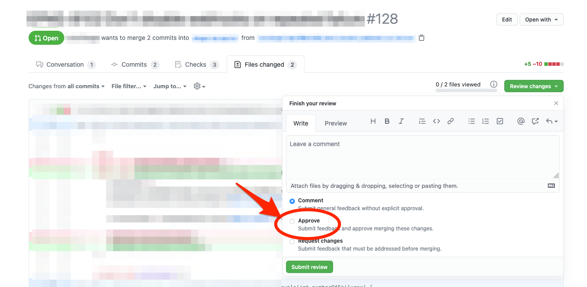

Agenda
- Scrum Team
- Ticket erstellen
- Branch anlegen
- Pull Request erstellen
- Code review
- Deployment
Branch erstellen
git checkout main
git pull upstream main
git checkout -b issue/GH-9_image-size
Pull Request erstellen
git add .
git commit -m "GH-9: Scale down large images in tutorials"
git push origin issue/GH-9_image-size
Code review

Deployment
- Ausführung von Unit Tests
- Generierung von Release
- Testen von Release
- Automatisches Ausrollen